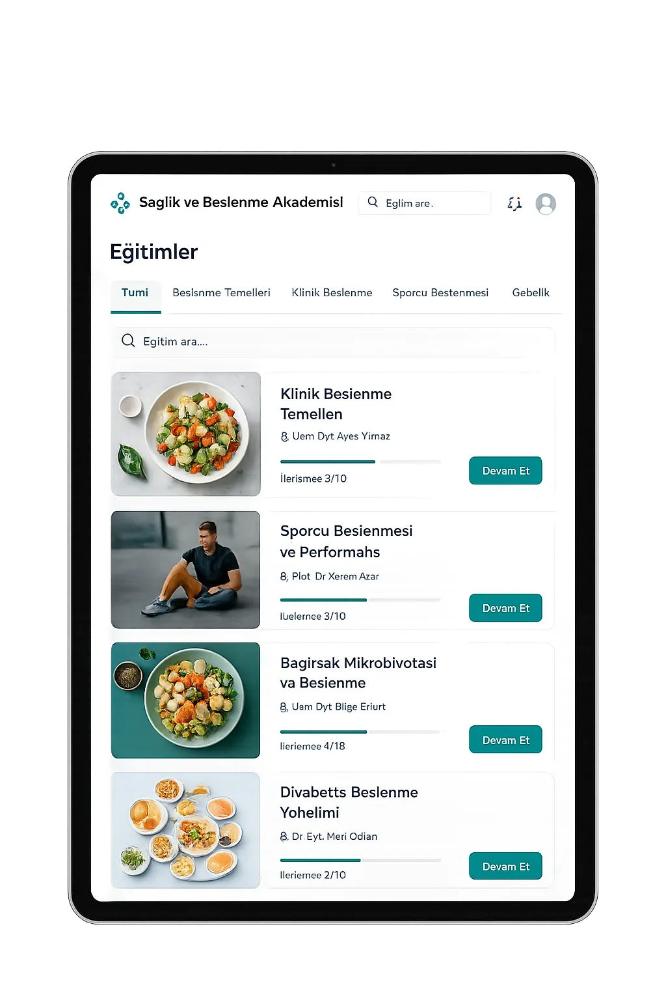
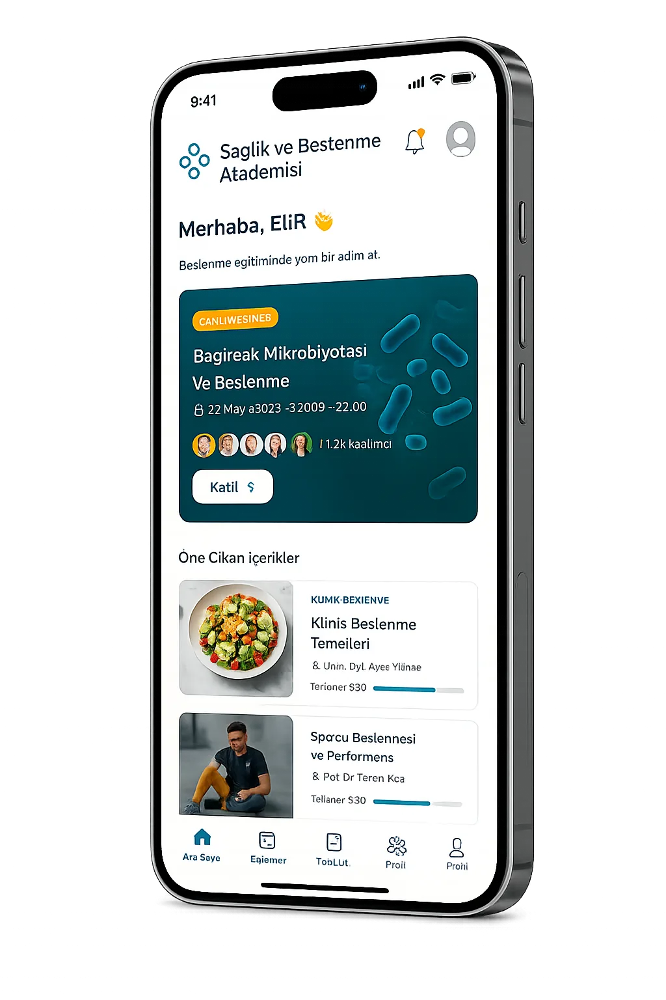
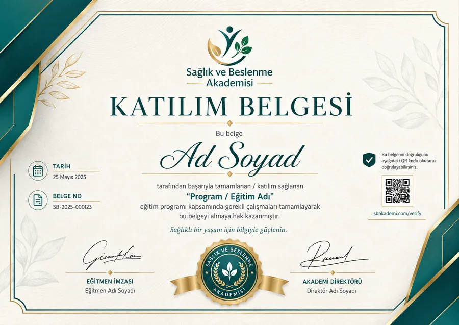
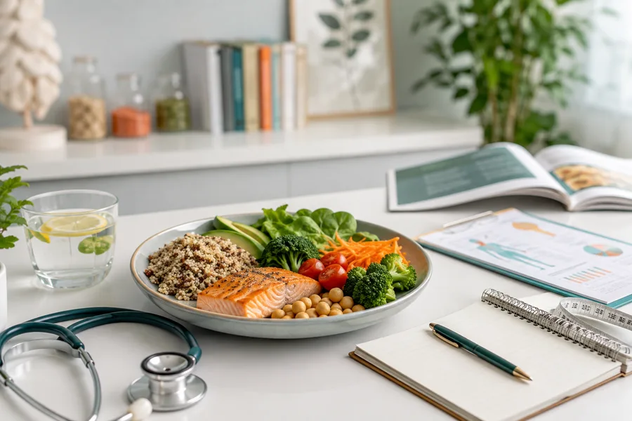
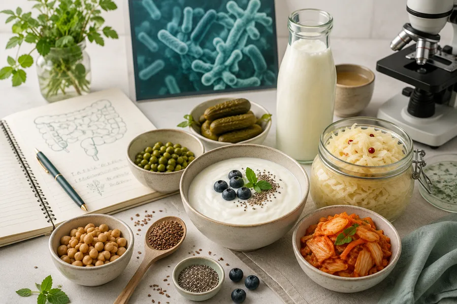

Klinik Beslenmede Güncel Yaklaşımlar
Kanıta dayalı klinik beslenme protokollerinde son dönem değişiklikleri ve uygulama notları.
SAĞLIK VE BESLENME PROFESYONELLERİ İÇİN
Canlı webinarlar, uygulamalı eğitimler ve sertifika programlarıyla güncel bilgiye ulaşın, mesleki yetkinliğinizi geliştirin.


GÜNCEL PROGRAMLAR
EĞİTİM ALANLARI
İlgi alanınıza ve mesleki hedeflerinize uygun eğitim programlarını keşfedin.
Tanı sonrası beslenme tedavisi ve vaka bazlı klinik karar süreçleri.
Mikrobiyota temelli yaklaşımlar ve sindirim sistemi odaklı beslenme.
Performans döngülerine göre makro planlama ve toparlanma stratejileri.
Büyüme eğrilerine göre çocuk ve ergen dönemi beslenme planlaması.
Sürdürülebilir davranış değişimi temelli ağırlık yönetimi protokolleri.
Danışan iletişimi, uygulama yönetimi ve kariyer planlaması başlıkları.
Katıldığınız programları tamamladıktan sonra dijital katılım veya başarı sertifikanıza ulaşın.

SOSYAL AKIŞ
Yeni eğitimler, webinar duyuruları, uzman görüşleri ve topluluk gelişmeleri.
GÜNCEL KAYNAKLAR

Kanıta dayalı klinik beslenme protokollerinde son dönem değişiklikleri ve uygulama notları.

Mikrobiyotanın metabolik sağlıkla ilişkisi ve beslenme ile desteklenme yolları.
Uzun vadeli uyumu artıran görüşme teknikleri ve takip yaklaşımları.
MERAK EDİLENLER
Eğitim sayfasındaki kayıt butonundan ya da WhatsApp üzerinden eğitim danışmanımıza ulaşarak kaydınızı tamamlayabilirsiniz.
Programlar çevrimiçi canlı yapılır. Katılamadığınız oturumları kayıt üzerinden sonradan izleyebilirsiniz.
Evet. Programı tamamlayan katılımcılara dijital katılım veya başarı sertifikası düzenlenir.
Kayıtlar program sonrası belirli bir süre boyunca katılımcı panelinden izlenebilir durumda kalır.
Mümkündür. Kurum ve ekip katılımları için özel planlama yapıyoruz; detaylar için bizimle iletişime geçin.